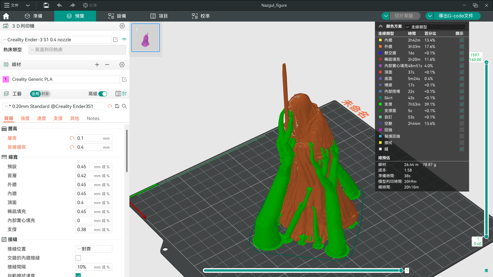
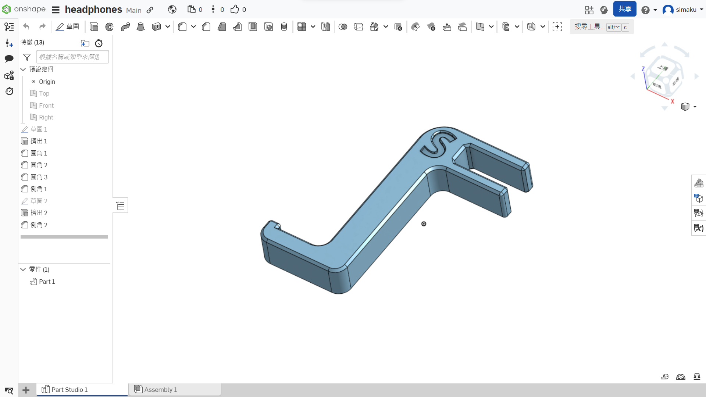

我在2023的7月接觸到了3D列印這項新穎的技術，那時我看了很多介紹。很多列印機的種類以及各項優缺點，我最後選擇了創想的Ender 3 v3 SE，一個屬於比較入門但又不失高品質列印的一台。
在我買到了之後，先是用CURA這一個切片軟體，尋找網路上的模型，不斷調適，尋找一個最完美的配置，最大的問題就是我列印的第一層都會黏著不完全，導致有時候要重來很多次，不過好在我
換了一個切片軟體(Orca slicer)之後，這個問題就很少出現了，目前也還在摸索怎麼將尺寸大小完美的印出來。

學了沒多久的3D列印我開始接觸CAD建模，一開始同學推薦我使用Fusion360，不過他說Fusion360可能不適合初學者，就算我有學過Blender，不過那完全是不同方向的建模軟體，所以我看來看去
還是學了Onshape，一開始我極度不適應，CAD不像Blender那樣是生成一個基礎形狀出來之後慢慢雕碩，而像CAD則是要先畫好平面圖再拉出來成為一個三維的實體，不過習慣了之後我簡直是起飛
了我先是自己設計了一個耳機架，就是一個插在櫃子層板上可以掛耳機的東東，實測過後簡直完美，而我目前正在繪製有關我ARDUINO無人機專案的東西，大概能在3月之前趕出來。
